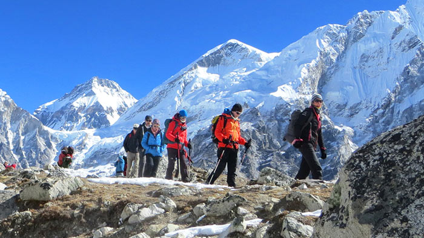
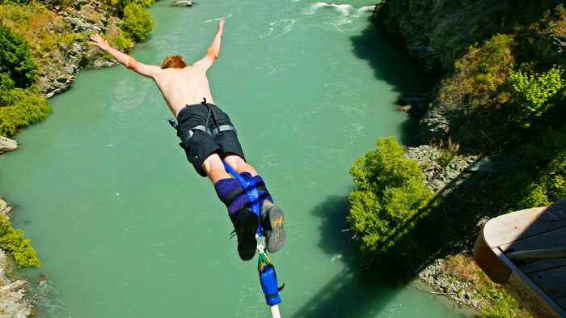

It is this varying altitude that has made Nepal a haven for adventure seekers. Very few places on earth have so many different altitudes within one country, and Nepal can offer it all. In the high mountains of the Himalayas, lie the Annapurna Mountains and the most famous mountain of all, Mount Everest. Treks through these regions are popular and exciting, exploring places where few people once set foot, and taking in the spectacular views of the world’s highest mountains as you travel on foot through some of the most beautiful landscapes on the planet. In the foothills and lower regions, there are a lot of places for other adventure sports, and the huge number of vast canyons, rushing rivers that race over daunting rapids, and the wide open expanses of grasslands make for an awesome and adrenaline-fueled experience.
One of the most amazing adventures you can undertake, bungee jumping can only be found in two places in Nepal, in Pokhara and at the Last Resort, at the Bhote Koshi River gorge near the Tibet-Nepal border. Last Resort is the most popular and highest of the two, dropping 160 meters towards the waters of the river below. The gear for jumping is all provided in the cost of the jump, and you just need a good, tight pair of shoes or boots and comfortable clothing.